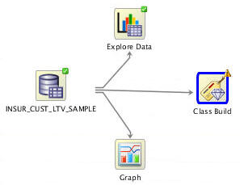
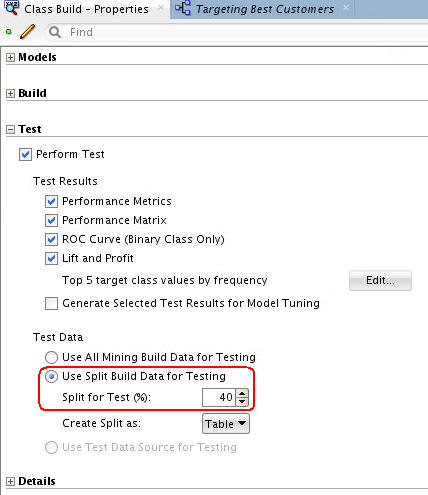
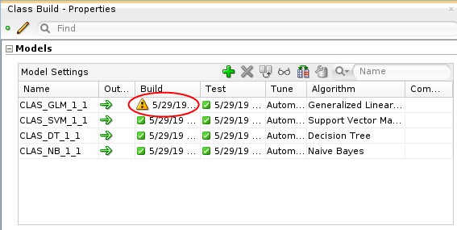
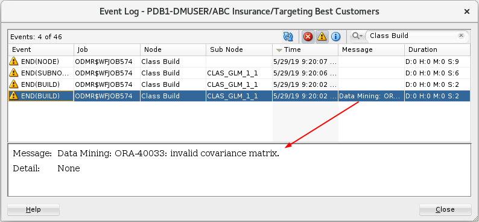
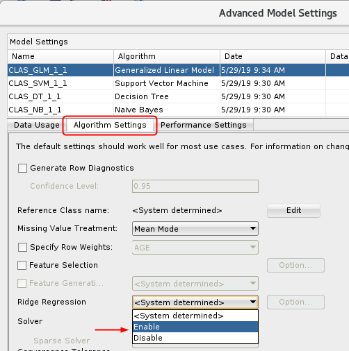
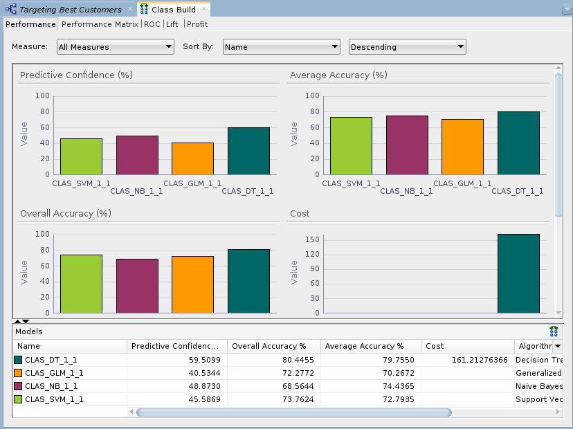
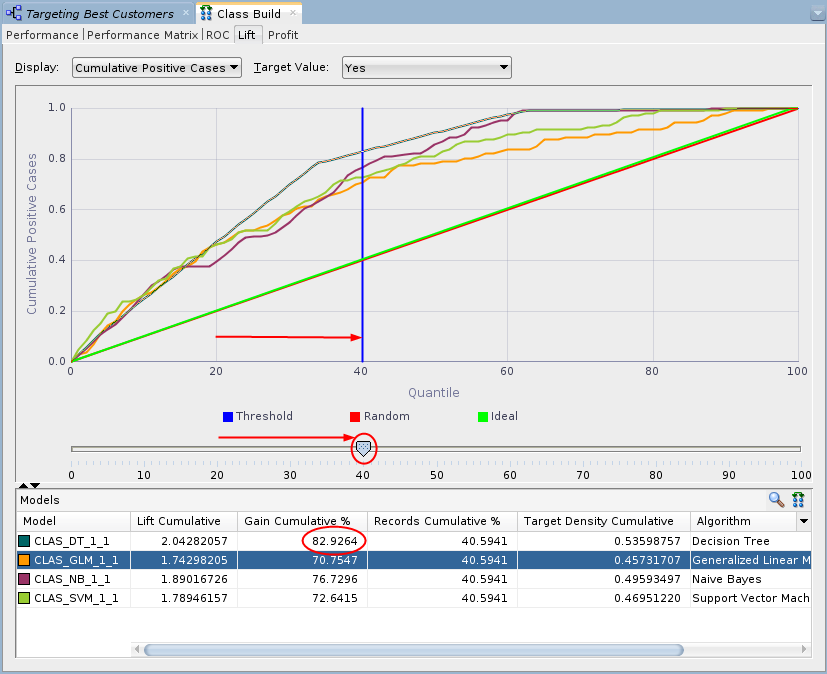
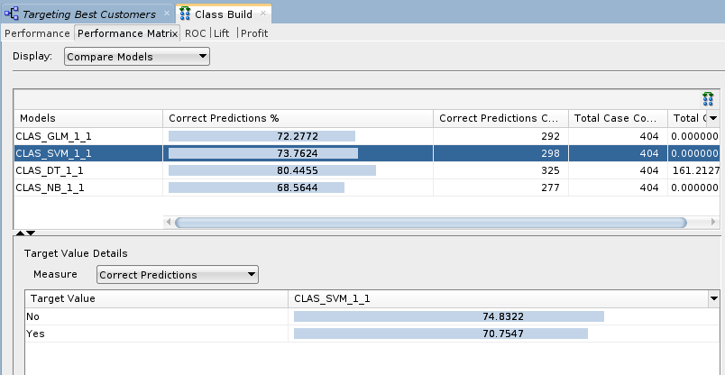

Before You Begin
Before You Begin
This 15-minute tutorial shows you how to apply a classification model to your Oracle Data Miner workflow project, build the models and compare the results. Classification models are used to predict individual behavior. In this scenario, you want to predict which customers are most likely to buy insurance by specifying a classification model.
Background
The Workflow creation process of Oracle Data Miner automates many of the difficult tasks during the building and testing of models. It’s difficult to know in advance which algorithms will best solve the business problem, so normally several models are created and tested. No model is perfect, and the search for the best predictive model is not necessarily a question of determining the model with the highest accuracy, but rather a question of determining the types of errors that are tolerable in view of the business goals.
What Do You Need?
- Oracle Database 19c Enterprise Edition
- Oracle SQL Developer version 19.x
- Oracle Data Miner User Account
- Oracle Data Miner Project and Workflow
 Create
Classification Models
Create
Classification Models
In Oracle Data Miner, a classification model creates up to four models using different algorithms, and all of the models in the classification node have the same target and Case ID. This default behavior makes it easier to figure out which algorithm gives the best predictions.
- Expand the Models category in the Components tab.
- Drag and drop the Classification node from the Components tab to the Workflow pane.
- Connect the data source node to the classification build
node.

Description of the illustration classification_models.jpg The Edit Classification Build Node window automatically appears.
A yellow "!" indicator is displayed next to the Target and Case ID fields. This means that an attribute must be selected for these items. In addition, the names for each model are automatically generated, and yours may differ slightly from those in this example.
- In the Edit Classification Build Node window:
- Select BUY_INSURANCE as the Target attribute.
- Select CUSTOMER_ID as the Case ID attribute.
- Click OK in the Edit Classification Build Node window to save your changes.
 Build
the Models
Build
the Models
Build the selected models against the source data. This operation is also called “training”, and the model is said to “learn” from the training data. A common data mining practice is to build (or train) your model against part of the source data, and then to test the model against the remaining portion of your data.
- Select Class Build node and expand the Test section of the
Properties tab.

Description of the illustration view-split-build.jpg In the Test Data region, notice that the Split for Test value is 40, which means the model will be built (trained) against 60% of the data, and tested against the remaining 40% You can change this default setting to any split that you desire.
- Right-click the Class Build node and select Run from the pop-up menu.
- Right-click the classification build node, select Go
to properties, and then select the Models section
in the Properties tab.

Description of the illustration build-properties.png Note that the GLM model displays a warning icon, while the other models have green check marks.
 View
the Event Log
View
the Event Log
If you encounter warnings or errors when you build a model, use the event log to diagnose the issue.
- Right-click the classification build node and select Show Event Log from the menu.
- Select the last row in the event log that has a message.

Description of the illustration event-log.png The event is warning that during the build, Data Miner detected that the GLM model has an invalid covariance matrix. The warning is a result a feature of Data Miner that detects when multiple variables in the data set have colinearity. This warning can generally be ignored.
- Click Close in the Event Log.
- To clear the warning, right-click on the classification node and select Edit.
- Select the CLAS_GLM_1_1 model and then click Edit (the pencil icon).
- In the Advanced Model Setting window, click the Algorithm
Setting tab, then select Enable for Ridge
Regression.

Description of the ridge-regression.png - Click OK in the Advanced Model Settings window.
- Click OK in the Edit Classification Build Node window.
- Right-click the Class Build node and select Run
from the pop-up menu.
All of the models will build without warnings.
 Compare
Models
Compare
Models
After you build/train the selected models, you can view and evaluate the results for all of the models in a comparative format. Here, you compare the relative results of all four classification models.
- Right-click the classification build node and select Compare
Test Results from the menu.

Description of the illustration compare-results.png Since the sample data set is very small, the numbers you get may differ slightly from those shown in the tutorial example. In addition, the histogram colors that you see may be different then those shown in this example.
- Select the Lift tab. Then, ensure that a Target Value of Yes is selected in the upper-right side of the graph.
- In the Lift tab, you can move the Quanitile measure point line
along the X axis of the graph by using the slider tool, as
shown below. The data in the Models pane at the bottom updates
automatically as you move the slider left or right.

Description of the illustration lift-graph.png As you move up the quantile range, the Lift Cumulative and Gain Cumulative % of the DT model overtakes the other models, as shown at the 40th quantile. As you move up past the 40th quantile, the other models show divergent changes in Lift and Gain. However, the DT model continues to provides the best Lift and Gain results.
- Select the Performance Matrix tab.
The Performance Matrix shows that the DT model has the highest Correct Predictions percentage, at over 80%. The SVM and GLM models are next in the low 70th percentile range.
- Select the SVM model to view the Target Value Details for
this model. Recall that the "Target Value" for each of the
models is the BUY_INSURANCE attribute.

Description of the performance-matrix.png The SVM model indicates a 75% correct prediction outcome for customers that don't buy insurance and a 71% correct prediction outcome for customers that do buy insurance.
- Select the DT model.
The DT model indicates a 81% correct prediction outcome for customers that don't buy insurance, and a 78% correct prediction outcome for customers that do buy insurance. After considering the initial analysis, you decide to investigate the Decision Tree model more closely.
- Dismiss the Class Build tabbed window.
 Select
and Examine a Specific Model
Select
and Examine a Specific Model
- In the workflow pane, right-click the Class Build node again, and select View Models > CLAS_DT_1_1 (Note: The exact name of your Decision Tree model may be different)
- Click on the Thumbnail tab.
- Move the viewer box around within the Thumbnail tab to dynamically locate your view in the primary window.
- Navigate to and select Node 2.
At this level, we see that the first split is based on the BANK_FUNDS attribute, and the second split is based on the CHECKING_AMOUNT attribute. Node 2 indicates that if BANK_FUNDS are greater than 225.5, and CHECKING_AMOUNT is less than or equal to 138, then there is a 64.9% chance that the customer will buy insurance.
- Select Node 4, at the bottom level in the
tree.
At this bottom level in the tree, a final split is added for the CREDIT_BALANCE attribute. Therefore, this node indicates that if BANK_FUNDS are greater than 225.5, and CHECKING_AMOUNT is less than or equal to 138, and CREDIT_BALANCE is less than or equal to 1434.5, then there is a 69% chance that the customer will buy insurance.
- Dismiss the Decision Tree display tab.
 Next Tutorial
Next Tutorial
In the next tutorial, you'll apply the Decision Tree Model and then create a table to display the results.